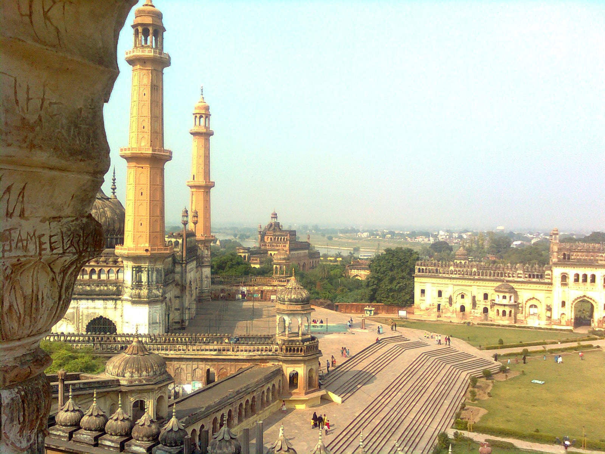

Lucknow, Uttar Pradesh - City of Nawabs
THERE'S SOMETHING THAT HAPPENS TO YOU WHEN YOU COME BACK TO YOUR HOMETOWN. ~JOSEPH DOUGHERTY
Ah! Lucknow, the most amazing city of memories. Such a calm city with kids playing cricket at almost every corner. That's how I grew up at least. It has changed with time too, but still holds such a beauty every time I visit.
The amazing Charbagh Railway Station to iconic Aminabad. With progressive Gomti Nagar to chilled Jankipuram and from Aashiyana to Bara Imambara. While the whole city growing around the glittering Hazratganj. This is how Lucknow has been.

Bada Imambara
The city is simple and serene with all people lost in happy moments of kindness and smiles. Where harmony has always prevailed because of the amazing people. I can't even unclutter my mind with places I want to list down to visit when in Lucknow. It's vibe is amazing when you visit the Bada Imambada and Residency. Also, when it comes to food and you are a non-vegetation you can't skip and not be here.